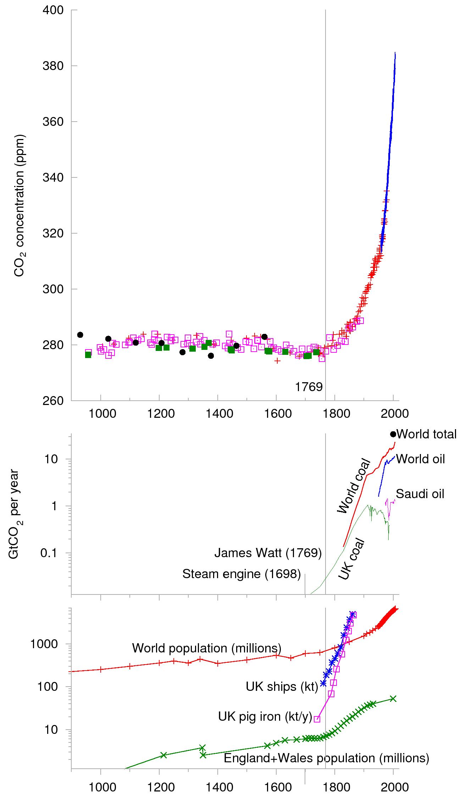
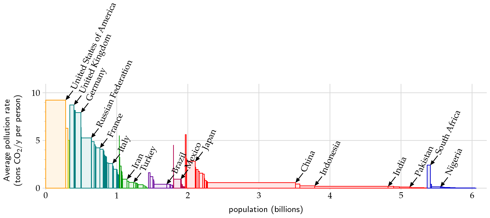

5 The CO2 concentration
In the previous chapter, we introduced the notion of a simple global energy model. Under this simple model, it was observed that the estimated surface temperature was much colder than expected, and it was conjectured that the likely culprit is due to the effects of greenhouse gas emissions.
This chapter will continue introducing you to the important contexual elements involved (i.e. how much CO2 are we talking about; why has it increased; what are we supposed to do about it?).
5.1 The Industrial Revolution and its effects
In his book, MacKay offers the following graph of carbon dioxide (CO2) concentration.

It is remarked that the sudden rise of CO2 concentration is attributed to the industrial revolution, with a key event being the invention of the steam engine in 1769. Correlations between the rise and other key industries can also be established, including correlations with population increase, the growth of British ships and pig-iron production, and oil and coal production.
So in a nutshell, Mackay quite strongly argues that the significant rises in measured CO2 are the result of human influence and notably the downstream effects of the Industrial Revolution.
5.2 Doubling of CO2
What happens if CO2 concentration is doubled? This is one of the key questions that McKay discusses. Models seem to indicate that a doubling of CO2 would have the same effect as increasing the intensity of the sun by 2% and global temperatures rising by 3\(^\circ\)C. Mackay notes (p. 10) that
This is what historians call a Bad Thing. I won’t recite the whole litany of probable drastic effects, as I am sure you’ve heard it before. The litany begins “the Greenland icecap would gradually melt, and, over a period of a few 100 years, sea-level would rise by about 7 metres.” The brunt of the litany falls on future generations. Such temperatures have not been seen on earth for at least 100 000 years, and it’s conceivable that the ecosystem would be so significantly altered that the earth would stop supplying some of the goods and services that we currently take for granted.
There is an excellent scientific paper by (Charney et al. 1979) that is cited by Mackay in footnote 10 on p.20, and which you should be able to find in the extended references of your Moodle page. This is a very readable scientific paper that summarises the current state-of-the art in simulations from 1979—which is still largely valid today. The authors of the review essentially conclude two facts.
Doubling atmospheric CO2 would change net heating of the troposphere, oceans, and land by an average power per unit area of roughly 4W/m^2. Since the average power absorbed by the atmosphere, land, and oceans is approximately 238 W/m^2, then this would be equivalent to increasing the sun’s intensity by about 1.7%.
The effect of global temperatures is more difficult, since this involves some complex simulations. However, the current simulations seem to predict an increase of between 2\(^\circ\)C and 3.5\(^\circ\)C.
5.3 Who should fix it?
So to whom does the responsibility lie to fix the issue? There are different visualisations possible in order to make this argument. For example, one can examine estimates of the rate of GG poulation per population (tons of CO2 emissions per year per person). This would tell you who are the current biggest offenders.
However, an alternative viewpoint is that the responsible party should be the party who was the largest polluter in time (i.e. find each country’s total historical footprint and divide by the populace). This produces the following graph.

Note that the units of the vertical axis are given as tons of CO2 per year per person.
So how much do we need to reduce in order to “guarantee” global temperatues do not rise more than 2\(^\circ\)C? At the end of the chapter, Mackay summarises the situations as follows. The plans require global emissions to fall by 70% or 85% by 2050. In the UK, for instance, 11 tons of CO2/y.p would need to be changed to 1.1 tons of CO2/y.p.